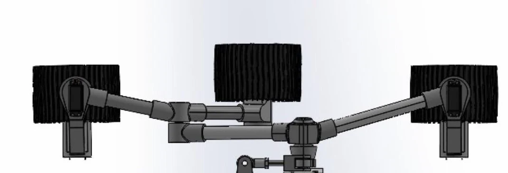
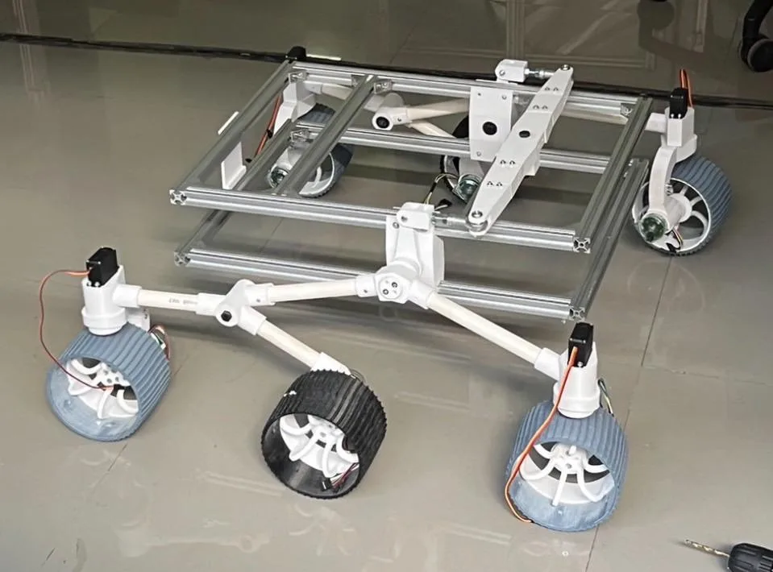
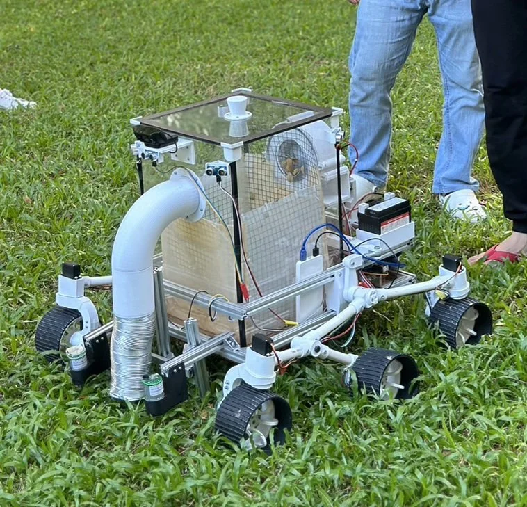
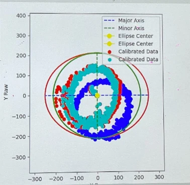
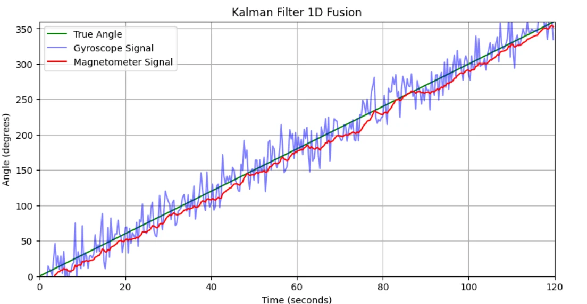
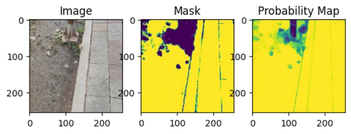
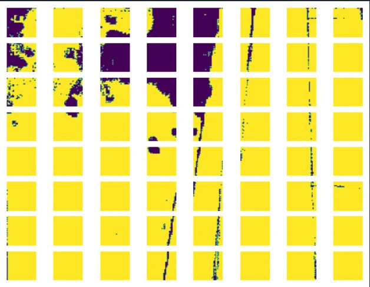
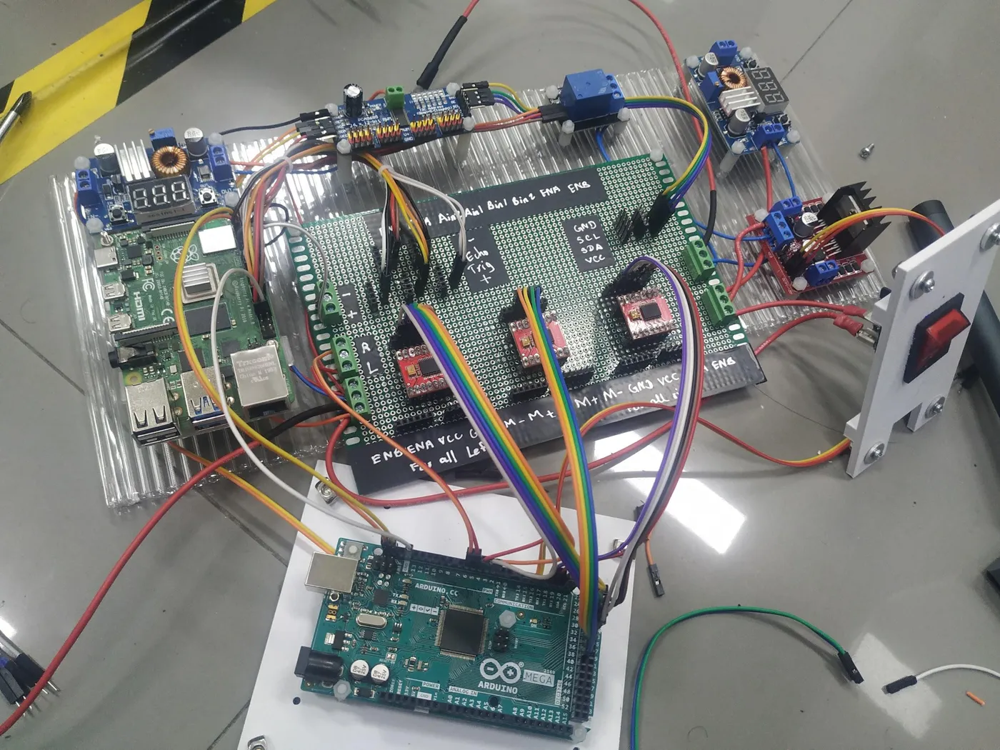
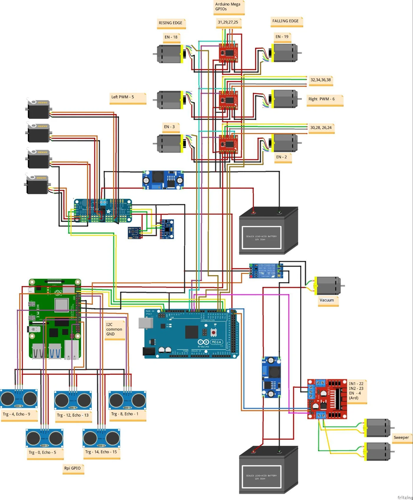
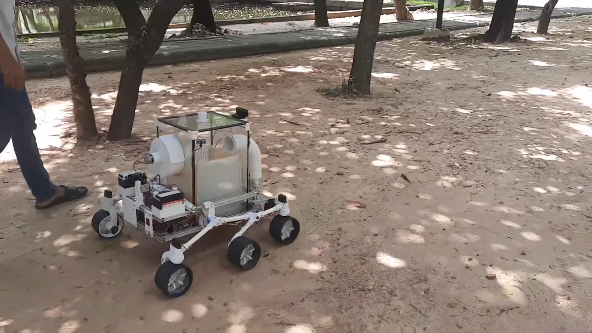

Projects

Leave Collector Robot
A rocker-bogie rover that vacuums leaves off grass, soil and pavement — and knows where it is without a map, a beacon or GPS.
A rocker-bogie rover that vacuums leaves off grass, soil and pavement — and knows where it is without a map, a beacon or GPS.
The brief was a groundskeeping robot: drive itself across a university lawn, pick up fallen leaves, and come back. That is three hard problems stacked on top of each other — a chassis that stays level on rough ground, a collector that works on grass and on concrete, and a way for the robot to know where it is while doing both.
We started with GPS fused with an accelerometer. The receivers we could afford were not precise enough for a lawn-sized course, so we dropped satellites entirely and switched to dead reckoning: count the wheels, track the heading, integrate. Everything downstream followed from that decision.
A Mars rover suspension, a vacuum, and a steering rack that does not scrub.
The chassis copies the Mars Perseverance rover: a rocker-bogie linkage that keeps all six wheels loaded and the body level while a single wheel climbs a root or a kerb. We built it from 20 mm PVC pipe and 3D-printed PLA joints to keep the mass down, hung off a 20×20 mm t-slot aluminium frame with acrylic decks, and added a differential bar across the top so the two rockers balance against each other.



Brushes and paddles each assume a surface. We wanted one mechanism that worked on side road, soil and grass alike, so we went with suction: a 3D-printed centrifugal impeller on an RS775 motor, chosen over an axial fan for its much higher static pressure.
Leaves travel up a duct into a sealed acrylic box. Inside the box a net basket catches them while letting air pass, so the impeller never sees debris and the basket lifts straight out to empty. Sealing the box mattered more than we expected — every leak costs suction.
Four MG996R servos steer the corner wheels to Ackermann geometry, so the inner and outer wheels trace concentric arcs instead of fighting each other and scrubbing the tyres. A four-bar linkage was impractical at this scale, so each wheel gets its own servo angle computed from the turning radius.
For a body of length l and width w turning through θ, the turn radius is R = (l/2) / tan θ, and the inner and outer wheels take arctan((l/2)/(R ∓ w/2)). The same radii set a PWM gain per side, R_in/(R_in+R_out), so the inner wheels also turn slower — which is what actually makes the turn smooth.
Count the wheels, trust the heading — but only after you have earned the heading.
Each of the six GB37 gearmotors carries a quadrature encoder. At 448 pulses per encoder revolution through a 43.8:1 gearbox, one wheel revolution is 19,622.4 pulses, and one wheel revolution moves the robot 0.377 m along the ground. Integrating pulses against the current heading gives position relative to the start — no map, no beacons.
That only works if the heading is good. Raw heading was the weak link, so most of the control work went into the two sensors that produce it.
A magnetometer sitting on a robot full of motors and current-carrying coils does not measure the Earth's field. Hard-iron sources bias the readings off-centre; soft-iron sources stretch the response into an ellipse. Spinning the robot and plotting the readings shows both at once: we subtract the offset to recentre the cloud, then apply a rotation-scale-rotation transform to pull the ellipse back into a circle.
The gyroscope needed the opposite treatment — it is honest but noisy. We enabled the on-chip low-pass filter to reject motor vibration, fixed the sensitivity at 65.6 LSB per °/s, and measured the bias at rest before every run so the integration does not walk away.

The two sensors fail in opposite ways: the gyro is smooth but drifts, the magnetometer is drift-free but noisy and easily disturbed. A 1-D Kalman filter fuses them into a single yaw estimate that inherits the gyro's short-term smoothness and the magnetometer's long-term truth.
Across repeated tests the fused heading held to ±2°. That estimate is the backbone of the whole robot: it feeds the dead-reckoning integration, it sets the Ackermann turn angle, and it is the measured variable for the PID loop that holds a straight line.

Holding a straight line is a PID loop on yaw. We set a target heading, subtract the fused estimate, and convert the error into a differential wheel speed: a positive error means the robot needs to go right, so the left wheels get more PWM. The sign carries the direction and the magnitude carries how hard to correct.
Ultrasonics say something is there. The camera says where to go instead.
Five HC-SR04 ultrasonic sensors ring the robot — three forward to detect an obstacle, two at the back so it can tell when it has cleared one and rejoin its original path. Each sensor needs a quiet interval to time its echo, which would stall the control loop, so the readings run in a background thread and the loop samples the latest value.
But a range reading only tells you that something is in front of you, not how wide it is or which way to go around. For that we added a camera and a segmentation model.
We fine-tuned Meta's Segment Anything Model to mark traversable ground from the Logitech C922 feed. SAM accepts point and box prompts alongside the image, which we used deliberately: dense prompt points across the bottom of the frame and sparse ones at the top, biasing the model toward the ground near the robot, which is what it has to commit to in the next second — rather than the horizon, which it does not.

The mask is split into a grid of patches, each scored traversable or not, and collapsed into one weight per row from the bottom of the image upward. The result is a short vector the controller can act on directly — for example [0, 0, 0, 0, 0, 777, 50, 777].
0 — carry straight on.777 — either side is open; −777 — neither is.
A Pi that thinks, an Arduino that moves, and a wireless tuning loop.
A single Raspberry Pi 4B could not do all of it — not enough pins, and not enough headroom once segmentation was in the loop. So the robot has a clean split: the Pi is the brain, reading sensors and running the filters and controllers, and the Arduino Mega is the limbs, driving three TB6612FNG H-bridges and a PCA9685 servo driver. They talk over I²C, Pi as master, on two wires.
Sensors are read straight off the bus with smbus2 rather than through a vendor library, which made the timing and the failure modes predictable. The TB6612FNG replaced the L298N we had used on earlier projects — same job, far less heat and a much smaller voltage drop. Power comes from two 12 V motorcycle batteries through XL4015 step-downs: one for the 5 V servo rail, one sized for the impeller's ~3 A draw.


Two protocols, chosen for two different failure tolerances. MQTT carries live telemetry — PWM, servo angles, the Kalman yaw — to a laptop, and carries PID constants back while the robot is driving. It is small, cheap and tolerant of a dropped packet, which is exactly right for tuning.
WebSocket carries the camera frames to the segmentation server and the results back. Images are large and a lost frame is not acceptable, so that channel gets the stateful, ordered transport.
Lawn, soil and leaf litter, on one battery charge.
The rover holds its line across the lawn under the PID controller, and turns on the Ackermann angle computed from the Kalman-filtered heading — both as designed. The suspension does its job: the body stays level over roots and the lip of the path.
The honest failure was torque. The GB37 gearmotors could not push the rover through the tall grass section; the control was fine, the drivetrain was undersized. That is the kind of result a report can only get from driving the thing outdoors.
Two things we would change next time. Replace the timed-routine navigation with a SLAM map and pure pursuit, so the robot follows waypoints instead of a rehearsed path. And replace the PVC structure with metal pipe — PVC saved money but the finished rover came out heavier than planned, which is the same problem as the torque one, seen from the other end.

smbus2 for sensors, threaded ultrasonic reads, MQTT telemetry, WebSocket vision linkBuilt by a team of ten for Feedback Control (01416304) at King Mongkut's Institute of Technology Ladkrabang, School of Engineering — Robotics and AI, Section 2, Group 7 — instructed by Prof. Dr. Pitikhate Sooraksa. Field-test footage by Pyae Htoo Khant.
The full 29-page report is published here with my teammates' names and student numbers removed.